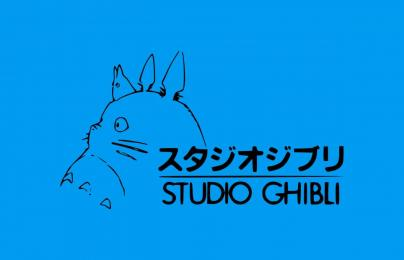
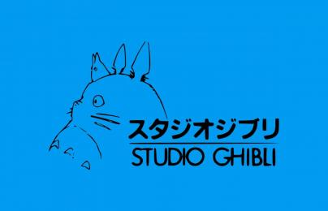
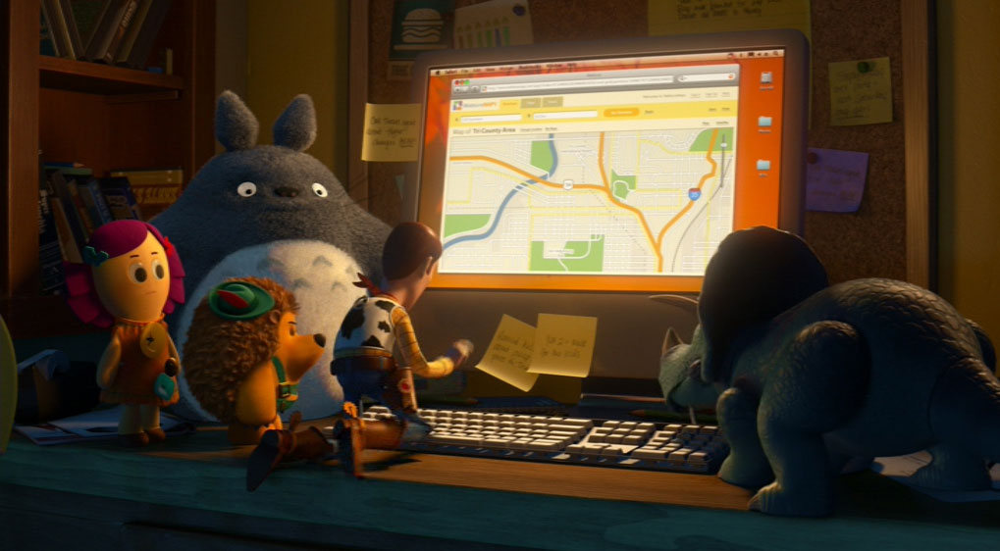

Totoro is a fictional creature created by Hayao Miyazaki and is a spirit of the forest. There are three types of Totoros - O Totoro, Chu Totoro, and Chibi Totoro. The gray Totoro pictured here is O Totoro, which is translated from Japanese to mean "King of the Forest", and is often seen sleeping. Additionaly, he only makes apperances when he wants to. His appearance is often described to be from a mix of a racoon and owl. Sometimes he appears in images with a leaf on his head, a reference to his movie where he used a leaf for protection from the rain. Due to his popularity, Totoro is also the trademark of Studio Ghibli, the animation studio that brought Totoro to life.
Totoro appears and is featured in the movie My Neighbor Totoro. He also made a special cameo appearance in the movie Toy Story 3. 